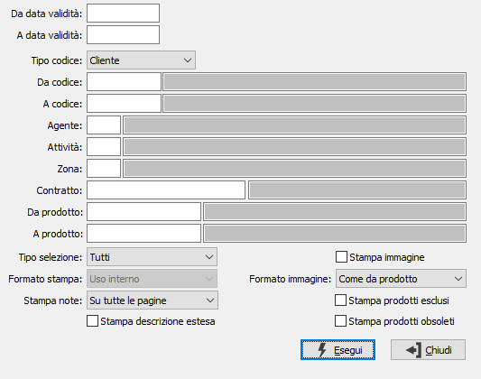

Stampa contratti clienti

DA DATA VALIDITÀ: data di inizio validità da cui deve iniziare l’analisi dei contratti da stampare. Il campo è obbligatorio.
A DATA VALIDITÀ: data di fine validità con cui deve terminare l’analisi dei contratti da stampare. Il campo è obbligatorio.
TIPO CODICE: specifica il tipo di sottoconto da analizzare: cliente o fornitore, normale o provvisorio.
DA CODICE: codice del sottoconto, in base al tipo codice selezionato, da cui si vuole iniziare la selezione di stampa. Confermando a vuoto, la selezione inizia dal primo cliente valido. Sul campo sono attive le funzioni di ricerca (F9).
A CODICE: codice del sottoconto, in base al tipo codice selezionato, con cui si vuole terminare la selezione di stampa. Confermando a vuoto, la selezione termina con l'ultimo cliente valido. Sul campo sono attive le funzioni di ricerca (F9).
AGENTE: codice dell'agente per cui si vuole effettuare la selezione di stampa. Sul campo sono attive le funzioni di ricerca (F9).
ATTIVITÀ: codice dell'attività per cui si vuole effettuare la selezione di stampa. Sul campo sono attive le funzioni di ricerca (F9).
ZONA: codice della zona per cui si vuole effettuare la selezione di stampa. Sul campo sono attive le funzioni di ricerca (F9).
CONTRATTO: eventuale codice del contratto da stampare. Sul campo sono attive le funzioni di ricerca (F9).
DA PRODOTTO: eventuale codice dell'articolo, presente in anagrafica Prodotti, da cui si desidera iniziare la stampa. Confermando a vuoto, la selezione inizia con il primo prodotto valido. Sul campo sono attive le funzioni di ricerca (F9).
A PRODOTTO: eventuale codice dell'articolo, presente in anagrafica Prodotti, con cui si desidera terminare la stampa. Confermando a vuoto, la selezione termina con l’ultimo valido. Sul campo sono attive le funzioni di ricerca (F9).
TIPO SELEZIONE: Combo box che indica il tipo di selezione per la quale effettuare la stampa. Valori ammessi: Tutti, Clienti/fornitori, Agenti, Attività, Zone, Contratto.
FORMATO STAMPA: combo box per definire il formato della stampa in relazione all’utilizzo, il campo è attivo solo per il tipo selezione cliente/fornitore ed agente. Valori ammessi:
stampa ad uso interno;
stampa ad uso esterno (riporta intestazione ditta e dati del cliente/fornitore o agente);
stampa uso esterno su carta intestata (riporta intestazione ditta e dati del cliente/fornitore o agente).
STAMPA NOTE: definisce il metodo di stampa delle note di testa del contratto: su tutte le pagine, solo sulla prima pagina, non stampa le note.
STAMPA DESCRIZIONE ESTESA: definisce se deve essere stampate la descrizione estesa dei prodotti (casella con segno di spunta).
STAMPA IMMAGINE: definisce se deve essere stampata l'immagine associata al prodotto (casella con segno di spunta).
FORMATO IMMAGINE: in caso di stampa dell'immagine del prodotto, definisce il formato di stampa: come da prodotto, piccola, media, grande.
STAMPA PRODOTTI ESCLUSI: consente di stampare anche i prodotti definiti come non stampabili sul listino (casella con segno di spunta).
STAMPA PRODOTTI OBSOLETI: consente di stampare anche i prodotti definiti come obsoleti (casella con segno di spunta).